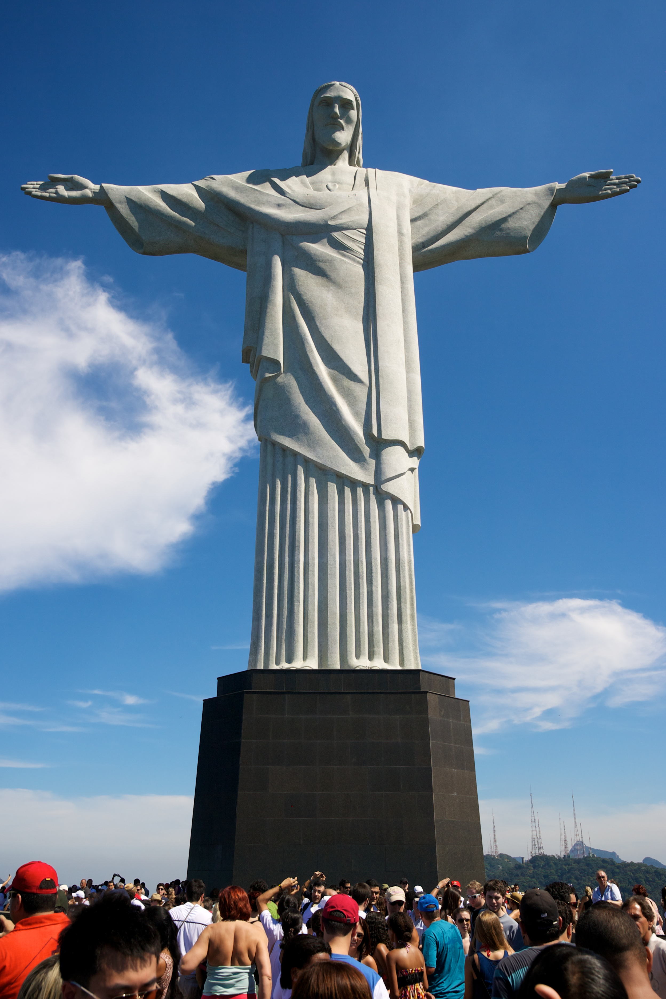

Jest to 38-metrowy pomnik Jezusa Chrystusa, wzniesiony na szczycie granitowej góry i zarazem największy tego typu posąg na świecie. Pomnik upamiętnia setną rocznicę niepodległości Brazylii. Został zaprojektowany przez francuskiego rzeźbiarza polskiego pochodzenia – Paula Landowskiego. Cała konstrukcja mierzy 38 metrów wysokości, sama rzeźba 30 metrów. Głowa Chrystusa ma 3,5 metra wysokości, a odległość między końcami palców rąk wynosi 28 metrów.
